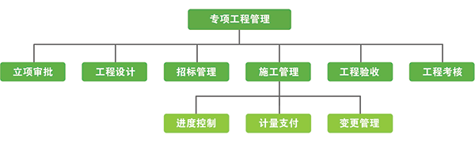

高速公路机电养护和评定管理系统
高速公路机电养护和评定管理系统是基于高速公路及城市交通计划、财务、业务管理等三大部门对高速公路机电设备管养的不同需求，通过建立统一的设备编码体系、检测评定标准、预算定额标准，全面建立资产台账，高效检测评定设备，合理配置备品备件，模型分析设备工况衰减程度，做到集设备资产、养护、检测、评定、预警、评估、决策于一体的全生命周期管理。提供了设备快速巡检所需的智能信息采集终端，在管理中心后台提供了一套基于B/S的完整信息处理软件，建立了覆盖路网级、路段级、检测单位、代维单位等多级的高速公路机电养护分布式管理要求。从而为全线机电设备的稳定运行、收费管理的正常运转、高速公路的畅通无阻提供强有力的保障。
（1）实现基于时空结合的设备资产管理
通过设备的属性信息、物理位置、管理位置，建立设备的统一编码体系，实现机电设备的资产与财务管理、实物与价值管理相结合，动态实时更新生成资产台账，做到账账、账卡、账物相符。
（2）规范机电养护检测和质量评定标准
建立统一机电养护日常巡查检测标准和养护质量评定标准，规范机电工程养护检测和质量评定的工作内容，方便管理人员随时掌握各营运高速公路机电工程养护质量情况。实现预防为主、防治结合管理原则。在出现故障或病害前，按管理标准、技术规范做经常性、预防性养护工作。
（3）规范机电设备的故障分析处理流程
建立规范的故障上报、分析、处置的处理流程，以及故障排障知识库、故障处置措施库。当发现故障时能够实时、及时的根据故障的特征自动提示故障的位置，并自动生成故障处置方案，方便故障的修复，保证业务的稳定运行。
（4）实现机电专项工程的全面规范管理
规范机电专项工程的涉及设计、招标、实施、计量、验收管理流程，建立诚信评价机制，对于设计质量低下、实施质量太差的单位列入“黑名单”，尤其是因其设计原因导致大比例工程变更的设计单位，要禁止进入。
（5）规范机电养护的计划预算养护定额
建立机电设备的维护维修定额，规范机电设备维护维修的内容和等级，为机电养护的计划预算提供科学的依据。通过历年的设备运行情况，结合机电设备的维护维修定额，自动生成来年的机电养护计划预算。
（6）实现机电设备管理的专家决策辅助
通过对过往历史数据的分析，为管理者决策提供辅助，可以动态汇总各营运高速公路的历史检测数据，分析检测结果，并根据需要定期、不定期对各营运高速公路的安全性、耐久性、适应性进行分析，为公司的养护决策和安全管理提供技术支撑。
资产管理一般涉及到计划、财务、业务三个部门的管理，一般采取资产管理与预算管理相结合的原则，推行实物费用定额制度，实现资产管理和预算管理的紧密统一；实现资产管理与财务管理、实物管理与价值管理相结合。资产具有自己的生命周期，从采购到报废，建立资产全生命周期的管理，包括资产的计划、采购、入库、领用、检测、维修、报废7个过程。

养护管理
建立日常生产作业的维护巡检标准，形成日常检测、定期检测的规范，自动生成巡检计划，自动生成巡检计划，由维护人员进行巡检，提交巡检报告，及时发现设备病灶，建立设备的病害库，加强设备的维护。包括故障管理流程、巡检管理、专业检测、设备运行状态。
质量评定
质量评定分为两层：路网级公司、路段级公司。路网级公司对下属路段公司评定，路段公司对下属收费站或机电部门、设备、设备生产商、设备维护单位进行评定。路段公司的评定标准参照《高速公路机电工程养护质量检验评定标准》。
专项工程
专项工程管理为了加强专项工程管理，规范工程建设行为，确保工程质量，降低工程造价，提高投资效益，保护公平竞争，规范工程建设，从而促进高速公路专项工程建设健康发展。专项工程管理包括工程的设计、招标、施工、计量、验收的全过程管理。

计划预算
根据全线高速公路机电设备整体运行情况和设备故障情况，按照日常保洁、小修保养、恢复更新、专项工程四类生成来年公司机电养护的整体预算。应尽可能在充分、全面掌握道路技术状况的基础上，按照先短期、后长期的原则编制出合理的、科学的机电养护计划。机电养护费用严格实行预算审批制度，经审批后执行。
统计分析
分为决策分析和统计报表，其中决策分析分为管养分析和设备评估，统计报表包括故障设备统计报表、维修费用统计报表、报废设备统计报表、设备采购统计报表、设备检测统计报表等，能导出并打印出来。
决策分析
管养分析
机电设备检测和评定管理系统也提供了决策分析功能，随着时间的积累，历史的检测数据也就成为了我们防患于未然的基础，通过对检测数据进行系统建模、数据分析、挖掘，最后直观、形象分析出过去维修频率较高的设备，然后加强对设备的维护、以至更换工作。
（1）设备故障次数分析、根据指定的时间段，地理位置分析出发生故障频率较高的前十名设备，以报表的方式直观展现出来，提醒工作人员更加注意这些设备。
（2）设备分类分析。在相同时间段内，分析设备类别，故障百分比柱状图对比。
（3）按年度分析设备，按年度分析，分析机电设备在近几年的故障发生趋势，为机电系统的大中修养护，提供决策支持。
（4）按季度分析设备，按季度、月度分析，求出历年来同季度或月度发生故障次数的总和，这样就可以知道该设备在哪个季度、月份容易发生故障，需要加强防护。
（5）按收费站分析，对所有收费站发生故障坎数分析收费站，根据指定的时间段，分析出发生故障频率较高的前十名收费站，以报表的方式直观展示出来，提醒工作人员更加注意这些收费站。
（6）按品牌分析，根据指定的时间段，分析同一设备哪个品牌发生故障频率较高，以报表的方式直观展示出来，提醒工作人员更加注意这些品牌。
（7）按养护单位分析，根据指定的时间段，分析养护单位处理的故障次数较高，以报表的方式直观的展示出来。
设备评估
机电设备的评估标准主要包括设备的使用寿命、经济寿命、技术寿命，根据评估的结果进行设备的更新和改造。
使用寿命：是指设备从投入使用开始，经过一段时间运行后，在技术上或经济上不宜继续使用，需要更新改造所经历的时间。
经济寿命：是指设备从全新状态开始，使用到造成经济上不合理而退出服务为止所经历的时间。
技术寿命：是指设备投入生产后，由于新技术的出现，使原有的设备丧失其使用价值而被淘汰为止所经历的时间。随着技术进步越来越快，技术寿命越短。
统计报表
主要包括设备检测报表、故障设备报表、维修费用报表、采购费用报表等常用报表。
移动终端
系统管理
检测评定标准、预算定额标准、考核标准、组织机构管理、权限管理、角色管理、日志管理、日志管理、机电分类、数字字典等基础数据管理。
通过高速公路机电养护和评定管理系统的建立，不仅能方便高速公路公司机电设备日常检测工作，而且可以提高对路段公司机电设备日常检测工作的评定效率：同时也是实现高速公路交通智能化的重要实施步骤。
（1）提高机电设备的使用寿命，降低设备的养护成本。通过条形码技术和统一的编码标准，建立规范的备品备件库、全面的设备台账，实现设备从购买、入库、使用、维修、报废的全生命周期管理。
（2）提高高速公路机电设备检测工作效率。把工作人员从过去手工检测、手工制作报表的方式解脱出来，通过高效的移动办公，实时收集机电设备的检测信息，实时生成报表；
（3）提高对高速公路机电设备检测工作评定效率。当评定高速公路机电设备的日常维护工作评定时，可以根据评定的标准随机的抽样检测过去的维护数据，也可以进行实时现场检测，现场即可自动计算出评定的绩效成绩。
（4）规范机电设备的维护标准。通过项目的实施，以高速公路机电设备检测标准为基准，对公司既有机电设备检测进行一次梳理和有效扩充。实现运维备品备件库的精确管理，提高备件周转效率及备件资金使用效率。
（5）规范运维工作中故障处理流程，规范设备故障发生、故障恢复、故障维修、修复确认、维修完成后故障单信息完善、故障延期修复报备等环节，并可针对各个环节进行考核，以提高运维管理水平；
（6）提高公司管理者决策的效率。通过对历史检测数据的分析，为公司领导的决策提供辅助帮助，可以更清楚的关注核心设备和关键问题，提高整个高速公路运输效率和运营效益。
2015 © 河南祯祥智能工程有限公司. ALL Rights Reserved.